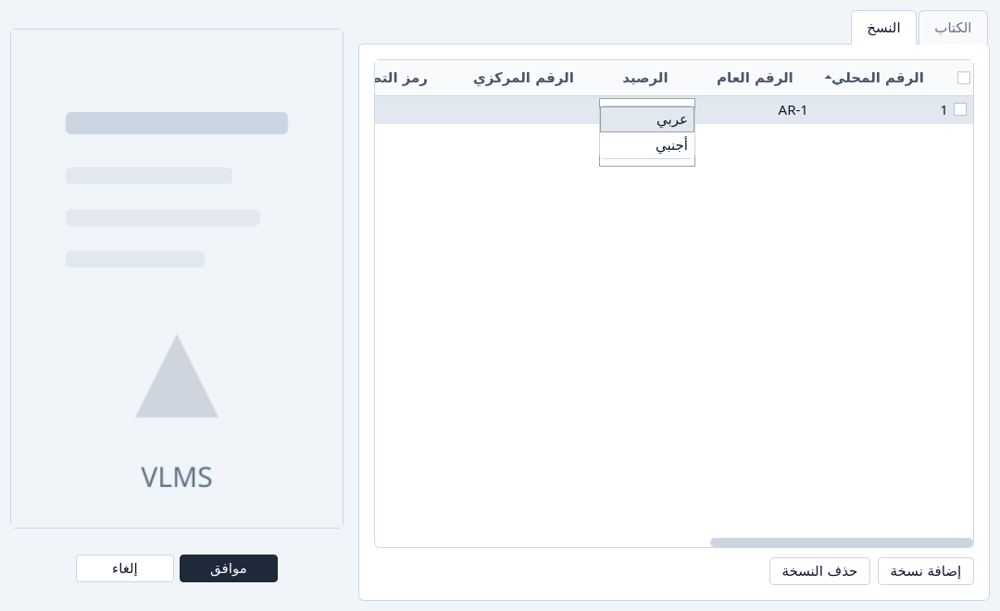
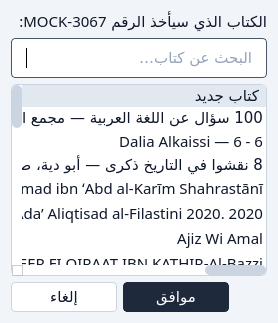
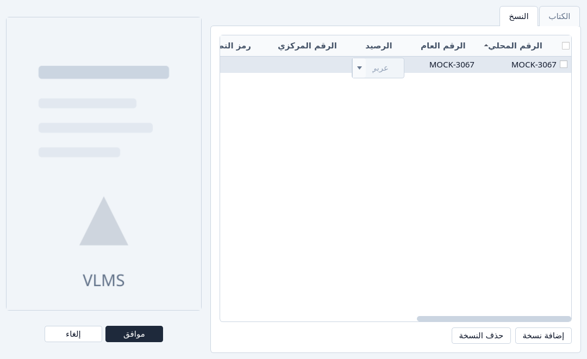

إعادة استعمال رقم محلي
أخذ الرقم التالي، أو فجوة حرة، أو رقم من الأرشيف.
الرقم المحلي لنسخة حية واحدة في الرصيد. حين تُؤرشف نسخة، يبقى رقمها عليها حتى تعطيه لأخرى. الفجوات التي تركتها أرقام أقدم حرة، لكن التطبيق لا يختار فجوة عنك. يعرض الرقم التالي أولاً.
على نسخة جديدة
افتح تبويب النسخ واضغط إضافة نسخة.
الرقم المحلي للسطر الجديد يفتح على الرقم التالي. الأرقام الحرة في القائمة نفسها، وراءه. لا تُستعمل إلا إذا اخترت واحداً.

الرقم التالي، والأرقام الحرة تحته. اترك الرقم التالي، أو اختر رقماً حراً، ثم موافق.

هذه نافذة إضافة كتاب نفسها.
من الأرشيف
الرقم الذي ما زال على نسخة مؤرشفة يُستعاد من الأرشيف، ولا يُكتب فوق نسخة حية.
افتح الأرشيف، اختر النسخ، وظلّل النسخة التي تريد رقمها.
إعادة استعمال الرقم المحلي متاح إذا كانت تلك النسخة ما زالت تحمل رقماً محلياً. عمود الإعارات لا يلزم أن يكون صفراً لإعادة الاستعمال. يلزم ذلك للحذف النهائي.

نسخ مؤرشفة، مع إعادة استعمال الرقم المحلي. اضغط إعادة استعمال الرقم المحلي واختر العنوان.
السطر الأول يبدأ كتاباً جديداً. الأسطر تحته عناوين حية من الرصيد نفسه. ابحث إذا أردت عنواناً بعينه.

اختيار كتاب جديد أو عنوان موجود للرقم. أكّد بـموافق. يفتح المحرّر والرقم مقفل على سطر نسخة.
لكتاب جديد، املأ العنوان واللغة، ثم موافق. لكتاب موجود، موافق يضيف النسخة. إلغاء يترك النسخة المؤرشفة على رقمها.

المحرّر الذي فتحته إعادة الاستعمال. تبويب النسخ يحمل الرقم من قبل.


لا يُطلَق الرقم إلا إذا نجح ذلك الحفظ. الحفظ المرفوض، أو إلغاء، يترك الأرشيف كما كان.